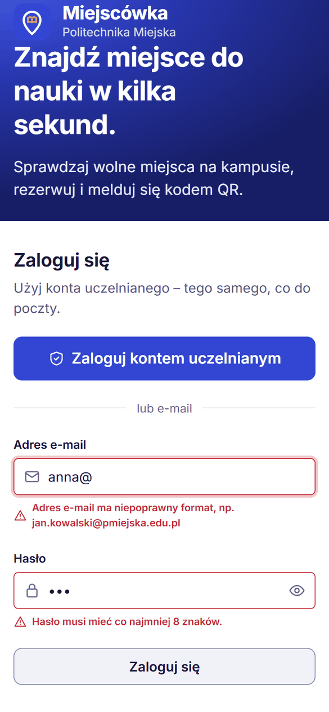
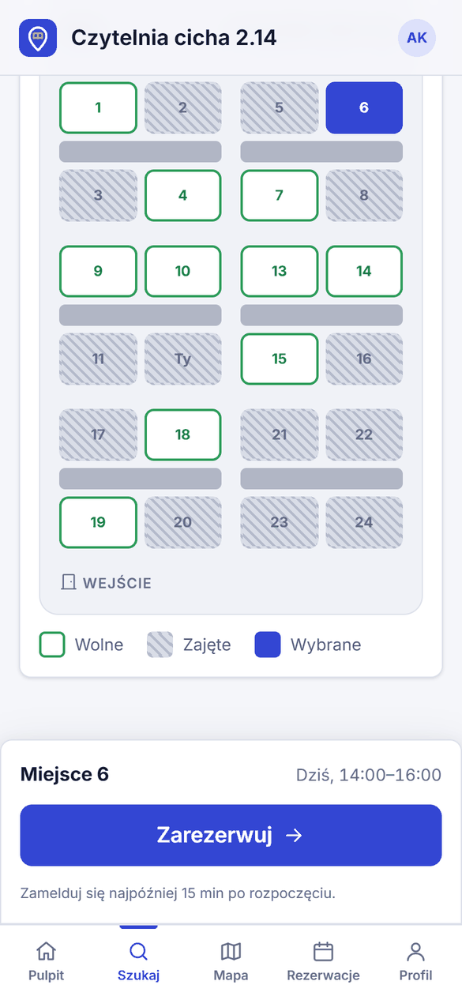
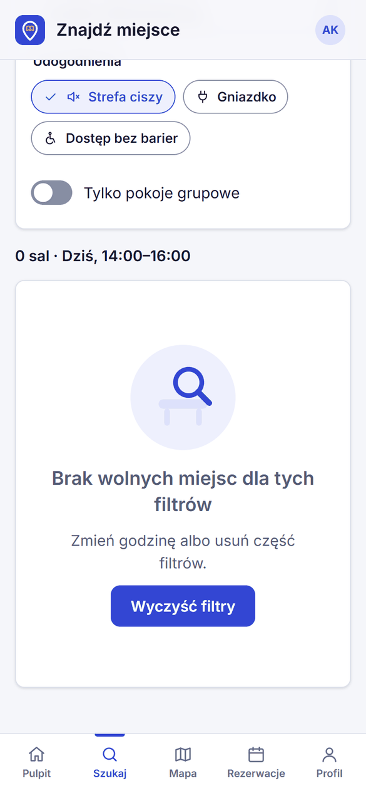
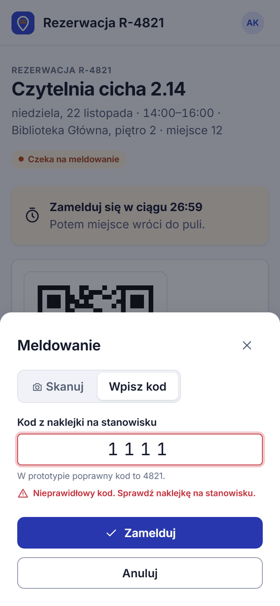
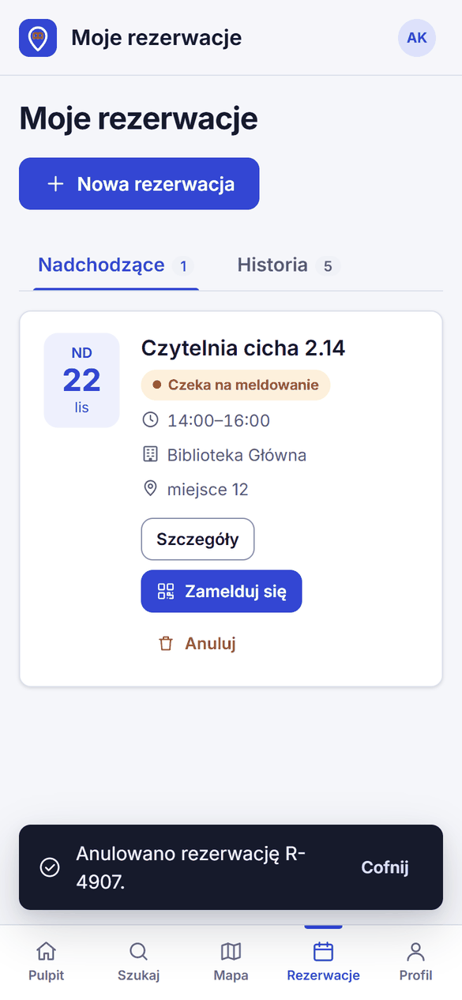
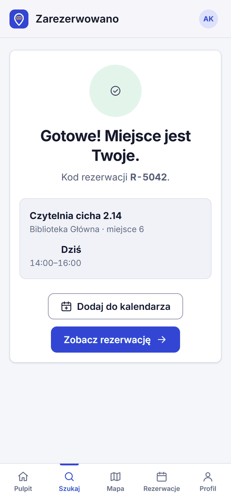
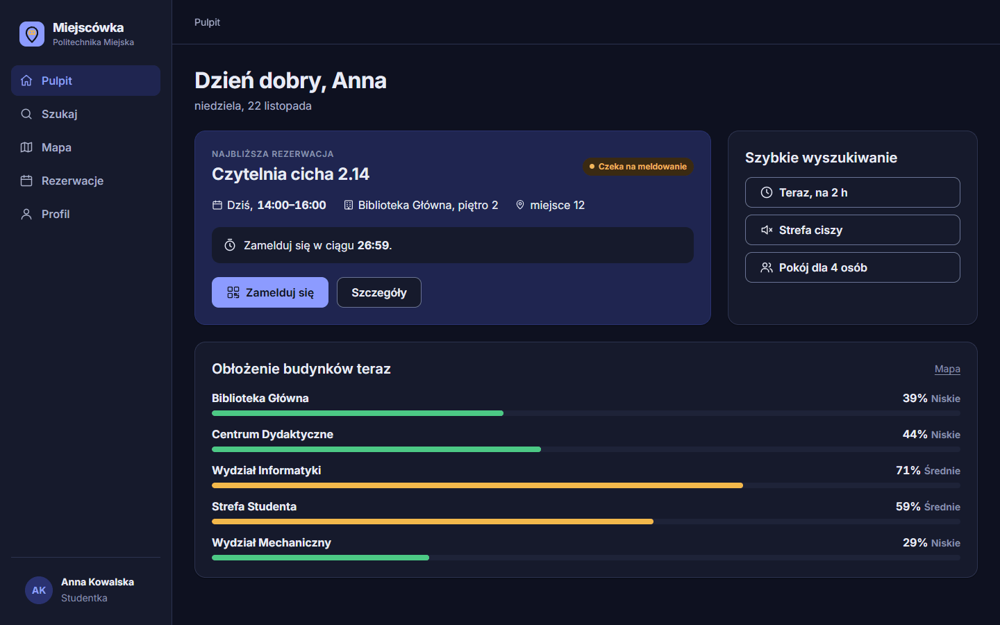
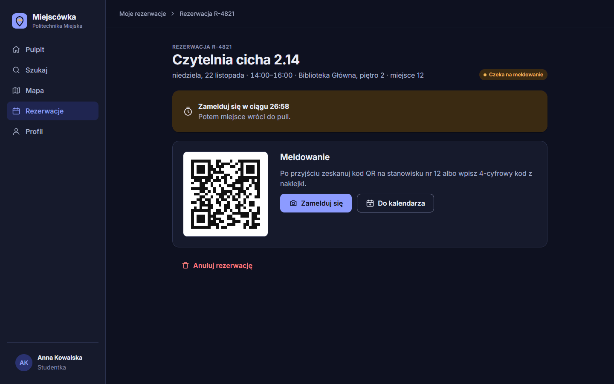

1. Ogólny opis tematu projektu
Miejscówka to aplikacja webowa uczelni, która pokazuje wolne miejsca do nauki, pozwala je zarezerwować w kilku kliknięciach i pilnuje, by zarezerwowane miejsca były naprawdę wykorzystywane – dzięki meldowaniu kodem QR.
Problem
- W sesji biblioteka i sale do nauki są przepełnione – studenci tracą czas na szukanie wolnego miejsca.
- Miejsca są „zajmowane” rzeczami na wiele godzin, choć nikt przy nich nie siedzi.
- Pokoje do pracy grupowej rezerwuje się mailowo lub na kartce w recepcji.
Rozwiązanie
- Wolne miejsca i obłożenie budynków – na liście, na mapie kampusu i na planie sali.
- Rezerwacja miejsca lub całego pokoju grupowego na wybrane godziny (do 4 h, do 5 dni naprzód).
- Meldowanie kodem QR – niezameldowane miejsce po 15 minutach wraca do puli.
- Panel administratora: obłożenie i czasowe blokowanie sal.
Użytkownicy
| Rola | Kto to jest | Najważniejsze zadania |
|---|---|---|
| Student | Osoba ucząca się na kampusie (także w grupie), korzysta głównie z telefonu. | Znaleźć wolne miejsce, zarezerwować je, zameldować się, anulować rezerwację. |
| Administrator | Pracownik biblioteki lub administracji budynku, pracuje na komputerze. | Sprawdzić obłożenie sal, zablokować salę na czas serwisu lub egzaminu. |
Typ aplikacji, rozdzielczość i urządzenia
Aplikacja webowa, responsywna (RWD) – jedna wersja działająca w przeglądarce na telefonie, tablecie i komputerze. Minimalna obsługiwana rozdzielczość: 360 × 640 px (piksele CSS). Treść nie wymaga przewijania w poziomie nawet przy szerokości 320 px.
| Urządzenie | Szerokość ekranu | Układ | Nawigacja | Urządzenie testowe |
|---|---|---|---|---|
| Telefon | 360 – 767 px | 4 kolumny, jedna kolumna treści | dolny pasek (5 pozycji) | 390 × 844 (np. iPhone 14) |
| Tablet | 768 – 1199 px | 8 kolumn | pasek ikon z boku | 820 × 1180 (iPad) |
| Komputer | od 1200 px | 12 kolumn, treść maks. 1280 px | menu boczne i okruszki | 1366 × 768, 1920 × 1080 |
Przeglądarki: Chrome, Edge, Firefox i Safari w dwóch ostatnich wersjach. Obsługa myszą, dotykiem i w pełni klawiaturą.
Widoki aplikacji (10)
| ID | Widok | Cel |
|---|---|---|
| V01 | Logowanie | Logowanie kontem uczelnianym (SSO) lub e-mailem. |
| V02 | Pulpit | Najbliższa rezerwacja z meldowaniem, szybkie wyszukiwanie, obłożenie budynków. |
| V03 | Wyszukiwarka | Filtry terminu, budynku i udogodnień oraz lista sal z wolnymi miejscami. |
| V04 | Mapa kampusu | Budynki z kolorem obłożenia i listą sal wybranego budynku. |
| V05 | Plan sali | Wybór dnia i godzin oraz miejsca na planie sali. |
| V06 | Rezerwacja | Podsumowanie, akceptacja zasad, potwierdzenie i ekran sukcesu. |
| V07 | Moje rezerwacje | Nadchodzące i historia; meldowanie i anulowanie. |
| V08 | Szczegóły i meldowanie | Status z odliczaniem, kod QR, meldowanie, anulowanie. |
| V09 | Profil i ustawienia | Powiadomienia, motyw, dane konta, wylogowanie. |
| V10 | Panel administratora | Wskaźniki dnia i tabela sal z blokowaniem. |
2. Diagramy przepływu użytkowników
Diagramy pokazują, jak użytkownicy poruszają się po aplikacji, jakie akcje podejmują i jakie są możliwe ścieżki. Oznaczenia: owal – początek ścieżki, prostokąt – krok lub widok, romb – decyzja.
2.1. F1 – Logowanie
flowchart TD
A(["Wejście do aplikacji"]) --> B{"Zalogowany?"}
B -- tak --> R{"Rola"}
B -- nie --> L["V01 Logowanie"]
L --> C{"Sposób logowania"}
C -- "konto uczelniane" --> SSO["Logowanie SSO uczelni"] --> R
C -- "e-mail" --> F["Wpisanie e-maila i hasła"] --> G{"Dane poprawne?"}
G -- nie --> H["Komunikat pod polem"] --> F
G -- tak --> R
R -- student --> P["V02 Pulpit"]
R -- administrator --> ADM["V10 Panel administratora"]
2.2. F2 – Wyszukanie i rezerwacja miejsca
flowchart TD
S(["V02 Pulpit"]) --> Q{"Jak szuka?"}
Q -- "szybkie wyszukiwanie" --> W["V03 Wyniki"]
Q -- "filtry" --> F["Dzień, godziny, budynek, udogodnienia"] --> W
Q -- "mapa" --> M["V04 Mapa: budynek i jego sale"]
W --> E{"Są wyniki?"}
E -- nie --> X["Stan pusty: Wyczyść filtry"] --> F
E -- tak --> PL["V05 Plan sali"]
M --> PL
PL --> T["Dzień i godziny na osi czasu"] --> SM["Wybór miejsca lub liczby osób"]
SM --> V{"Poniżej limitu?"}
V -- "nie (3 aktywne)" --> VE["Okno: osiągnięto limit"]
V -- tak --> K["V06 Potwierdzenie rezerwacji"]
K --> KA{"Zasady OK?"}
KA -- nie --> KAE["Komunikat pod polem"] --> K
KA -- tak --> OK["Sukces: kod rezerwacji"]
OK --> ICS["Dodaj do kalendarza"]
OK --> DET["V08 Szczegóły rezerwacji"]
Najkrótsza ścieżka: Pulpit → „Teraz, na 2 h” → sala z listy → miejsce na planie → „Zarezerwuj” → akceptacja zasad → „Potwierdź rezerwację” = 6 kliknięć.
2.3. F3 – Meldowanie
flowchart TD
A(["Rezerwacja potwierdzona"]) --> B["Przypomnienie 15 min przed rozpoczęciem"]
B --> C{"Na miejscu?"}
C -- "tak, do 15 min po starcie" --> D["Zamelduj się: V02, V07 lub V08"]
D --> E{"Metoda"}
E -- "skan kodu QR" --> G{"Kod poprawny?"}
E -- "kod 4-cyfrowy" --> G
G -- nie --> H["Błąd: sprawdź naklejkę na stanowisku"] --> E
G -- tak --> I["Status: Trwa – zameldowano"]
C -- nie --> K["Miejsce wraca do puli"] --> L["Status: Nieobecność"]
2.4. F4 – Anulowanie rezerwacji
flowchart TD
A(["V07 Moje rezerwacje lub V08 Szczegóły"]) --> B["Anuluj"]
B --> C["Okno: Anulować rezerwację?"]
C --> D{"Decyzja"}
D -- "Zostaw" --> A
D -- "Anuluj rezerwację" --> E["Status: Anulowana"] --> F["Komunikat z przyciskiem Cofnij"]
F -- "Cofnij" --> G["Rezerwacja przywrócona"]
F -- "brak akcji" --> H["Rezerwacja w zakładce Historia"]
2.5. F5 – Administrator: blokada sali
flowchart TD
A(["V10 Panel administratora"]) --> B["Tabela sal, opcjonalnie filtr budynku"]
B --> D{"Akcja"}
D -- "Zablokuj" --> E["Okno: powód, powiadomienie osób"] --> F{"Potwierdzono?"}
F -- nie --> B
F -- tak --> G["Status: Zablokowana"] --> H["Sala znika z wyszukiwarki"]
D -- "Odblokuj" --> I["Status: Otwarta"]
2.6. Możliwe stany rezerwacji
stateDiagram-v2 state "Potwierdzona" as P state "Czeka na meldowanie" as W state "Trwa (zameldowano)" as A state "Zakończona" as D state "Nieobecność" as N state "Anulowana" as C [*] --> P: utworzenie P --> W: 15 min przed startem W --> A: meldowanie W --> N: brak meldowania P --> C: anulowanie W --> C: anulowanie A --> D: koniec czasu
3. Diagramy nawigacji
Diagramy pokazują, jak użytkownik przemieszcza się między widokami. Każdy widok ma własny adres (np. #/sala/bg-214), więc działa przycisk „Wstecz” przeglądarki. Od pulpitu do potwierdzenia rezerwacji są najwyżej 3 widoki: Wyszukiwarka (lub Mapa) → Plan sali → Rezerwacja.
3.1. Struktura aplikacji
flowchart TD
L["V01 Logowanie"] --> P["V02 Pulpit"]
P --- N(("Menu główne"))
N --> S["V03 Wyszukiwarka"]
N --> M["V04 Mapa kampusu"]
N --> R["V07 Moje rezerwacje"]
N --> PR["V09 Profil"]
S --> SALA["V05 Plan sali"]
M --> SALA
SALA --> K["V06 Rezerwacja"]
K --> D["V08 Szczegóły i meldowanie"]
R --> D
N -. "tylko administrator" .-> A["V10 Panel administratora"]
3.2. Przejścia między widokami
Przejścia wywoływane przyciskami i linkami w treści widoków. Widoki w zaokrąglonych ramkach to pozycje menu – oprócz pokazanych strzałek są dostępne jednym kliknięciem z każdego ekranu (diagram 3.1). Strzałki ciągłe – akcje, przerywane – powroty.
flowchart TD
V01["V01 Logowanie"] -->|"SSO / e-mail"| V02("V02 Pulpit")
V01 -->|"rola: administrator"| V10["V10 Panel administratora"]
V02 -->|"Szybkie wyszukiwanie"| V03("V03 Wyszukiwarka")
V02 -->|"pasek obłożenia"| V04("V04 Mapa kampusu")
V03 <-->|"Lista / Mapa"| V04
V03 -->|"karta sali"| V05["V05 Plan sali"]
V04 -->|"sala w panelu budynku"| V05
V05 -->|"Zarezerwuj"| V06["V06 Rezerwacja"]
V06 -.->|"Wróć"| V05
V06 -->|"Zobacz rezerwację"| V08["V08 Szczegóły i meldowanie"]
V02 -->|"Zamelduj się, Szczegóły"| V08
V07("V07 Moje rezerwacje") -->|"Szczegóły"| V08
V07 -->|"Nowa rezerwacja"| V03
V09("V09 Profil") -->|"rola: Administrator"| V10
V09 -.->|"Wyloguj"| V01
3.3. Elementy nawigacji
| Element | Gdzie i jak działa |
|---|---|
| Nawigacja globalna | 5 pozycji: Pulpit, Szukaj, Mapa, Rezerwacje, Profil (administrator ma szóstą: Panel admina). Komputer – menu boczne, tablet – pasek ikon, telefon – dolny pasek. Bieżąca pozycja jest wyróżniona. |
| Okruszki | Na komputerze i tablecie dla widoków zagnieżdżonych, np. Szukaj › Czytelnia cicha 2.14 › Rezerwacja. Na telefonie zastępuje je tytuł w górnym pasku. |
| Menu konta | Pod awatarem: Profil i ustawienia, zmiana motywu, Wyloguj. |
| Okna modalne | Meldowanie, anulowanie, limit rezerwacji, blokada sali – nie zmieniają widoku; na telefonie wysuwają się od dołu ekranu. |
4. Wireframes
Szkice niskiej wierności pokazują strukturę i rozmieszczenie elementów, bez kolorów i grafiki. Każdy widok przedstawiono w wersji na komputer (1440 px) i na telefon (390 px). Numery w kółkach odpowiadają adnotacjom pod szkicem.
5. Style Guide (Przewodnik stylów)
Wszystkie wartości są zapisane jako tokeny (zmienne CSS) w pliku prototyp/assets/miejscowka.css. Przykłady w tym rozdziale są wyświetlane tym samym kodem co prototyp.
5.1. Logo
5.2. Kolorystyka
| Kolor | Nazwa | Token | Wartość | Zastosowanie |
|---|---|---|---|---|
| Główny | --c-primary | #3346D3 | Przyciski, linki, wybór (kontrast 7,1:1) | |
| Główny – tło | --c-primary-tint | #EEF0FD | Wyróżnienia, aktywne menu | |
| Sukces / wolne | --c-success | #1D7A45 | Liczba wolnych miejsc, potwierdzenia (5,4:1) | |
| Ostrzeżenie | --c-warning | #9A5400 | Oczekiwanie na meldowanie (5,1:1) | |
| Błąd / anulowanie | --c-danger | #C42B37 | Błędy, akcje destrukcyjne (5,6:1) | |
| Tekst | --c-text | #161A2B | Tekst podstawowy (17,3:1) | |
| Tekst drugorzędny | --c-text-muted | #545C74 | Opisy, podpisy (6,7:1) | |
| Obramowanie pól | --c-border-strong | #878EA3 | Pola formularzy (3,3:1) | |
| Tło aplikacji | --c-bg | #F5F6FA | Tło za kartami | |
| Karty | --c-surface | #FFFFFF | Karty, panele, okna |
- Kolor główny (granat) tylko dla elementów klikalnych i stanu „wybrane”.
- Wszystkie teksty mają kontrast co najmniej 4,5:1, a obramowania pól 3:1 (wymagania WCAG 2.1 AA).
- Kolor nigdy nie jest jedynym nośnikiem informacji – zawsze towarzyszy mu tekst, liczba lub wzór.
Obłożenie i statusy miejsc
| Kolor | Znaczenie | Wartość |
|---|---|---|
| Obłożenie niskie (poniżej 50%) | #2E9D5B | |
| Obłożenie średnie (50–80%) | #BF8300 | |
| Obłożenie wysokie (powyżej 80%) | #D2453F |
Motyw ciemny
| Kolor | Nazwa | Wartość |
|---|---|---|
| Tło | #0E1120 | |
| Karty | #161A2C | |
| Główny | #8C9BFF | |
| Tekst | #E8EBF5 | |
| Sukces | #5BD394 | |
| Błąd | #FF7B86 |
5.3. Typografia
Krój aplikacji: Inter (licencja SIL Open Font License, pliki dołączone do projektu), zastępczo Segoe UI. Cyfry o stałej szerokości dla godzin i liczników.
| Próbka | Token | Rozmiar / grubość | Zastosowanie |
|---|---|---|---|
| 48% | --fs-display | 40 px / 700 | Liczby we wskaźnikach |
| Moje rezerwacje | --fs-h1 | 32 px / 700 (telefon 26) | Tytuł widoku |
| Panel budynku | --fs-h2 | 24 px / 650 | Sekcje, tytuły okien |
| Czytelnia cicha 2.14 | --fs-h3 | 20 px / 600 | Nagłówki kart |
| Tekst podstawowy | --fs-md | 16 px / 400 | Treść, pola formularzy |
| Tekst pomocniczy | --fs-sm | 14 px / 400 | Opisy, tabele |
| Najbliższa rezerwacja | .overline | 12 px / 650, wersaliki | Nadtytuły kart |
5.4. Ikonografia
Własny zestaw ikon liniowych: siatka 24 × 24 px, linia 1,75 px, zaokrąglone końce, bez wypełnień. Rozmiary 16 px (w tekście), 20 px (domyślnie) i 24 px (nawigacja). Ikona przyjmuje kolor tekstu; ikona bez podpisu zawsze ma opis dla czytnika ekranu.
5.5. Siatka, odstępy i kształty
Siatka 12 kolumn (komputer), 8 (tablet) i 4 (telefon). Wszystkie odstępy są wielokrotnością 4 px; minimalny rozmiar elementu dotykowego to 44 × 44 px.
| Token | Wartość | Podgląd | Użycie |
|---|---|---|---|
--sp-2 | 8 px | odstępy w grupach elementów | |
--sp-4 | 16 px | margines na telefonie | |
--sp-6 | 24 px | wnętrze kart, odstęp kolumn | |
--sp-7 | 32 px | margines na komputerze |
| Element | Zaokrąglenie | Cień |
|---|---|---|
| Pola formularzy | 6 px | brak |
| Przyciski | 10 px | brak |
| Karty | 16 px | delikatny (--sh-1) |
| Okna modalne, menu | 16 px | wyraźny (--sh-3) |
| Chipy, odznaki | pełne (kształt pigułki) | brak |
5.6. Komponenty
Przyciski
Na widoku jest najwyżej jeden przycisk główny. Etykiety zaczynają się od czasownika („Zarezerwuj”, „Zamelduj się”). Akcja destrukcyjna wymaga potwierdzenia w oknie.
Pola formularza
Wybór i przełączniki
Statusy i zakładki
Karta, komunikat, okno
Czytelnia cicha 2.14
Dziś, 14:00–16:00
Anulować rezerwację?
Anulowanie przed rozpoczęciem nie liczy się jako nieobecność.
Okno modalne: tytuł w formie pytania, akcja bezpieczna po lewej, główna po prawej. Esc i kliknięcie tła zamykają okno. Animacje trwają 120–320 ms i są wyłączane, gdy system ma ustawione ograniczenie ruchu.
6. Design aplikacji
Projekt graficzny wykonano jako interaktywny prototyp w HTML i CSS. To narzędzie tego samego rodzaju co Figma czy Adobe XD: widoki są połączone przejściami, a przyciski, formularze i okna działają po kliknięciu. Poniżej pokazano wszystkie 10 widoków (komputer 1440 px i telefon 390 px), stany elementów interaktywnych oraz motyw ciemny.
6.11. Elementy interaktywne – stany






| Widok | Elementy interaktywne |
|---|---|
| V01 | Logowanie SSO, formularz e-mail z walidacją, pokaż / ukryj hasło. |
| V02 | Odliczanie meldowania na żywo, „Zamelduj się”, „Szczegóły”, 3 przyciski szybkiego wyszukiwania, paski obłożenia (przejście do mapy). |
| V03 | Filtry (dzień, godziny, budynek, udogodnienia, pokoje grupowe) – wyniki od razu, „Wyczyść”, przełącznik Lista / Mapa, karty sal. |
| V04 | Budynki na mapie (mysz i klawiatura), panel budynku z listą sal. |
| V05 | Dni, oś czasu, czas trwania (− / +), miejsca na planie, liczba osób w pokoju grupowym, „Zarezerwuj” z kontrolą limitu. |
| V06 | Przypomnienie, akceptacja zasad (walidacja), „Potwierdź rezerwację”, „Dodaj do kalendarza” (plik .ics). |
| V07 | Zakładki, „Szczegóły”, „Zamelduj się”, „Anuluj” (okno i „Cofnij”). |
| V08 | Meldowanie: skan (symulacja) lub kod 4821, kalendarz, anulowanie. |
| V09 | Przełączniki powiadomień, motyw jasny / ciemny / systemowy, „Wyloguj”, przełącznik roli (demo). |
| V10 | Filtr budynku, „Zablokuj” (okno) i „Odblokuj” salę. |
6.12. Motyw ciemny


6.13. Prototyp interaktywny
- Otwórz
prototyp/index.htmlw przeglądarce Chrome, Edge lub Firefox. Działa bez internetu i bez serwera. - Wybierz widok z listy albo zacznij od logowania i klikaj jak w prawdziwej aplikacji.
- Pasek u góry: urządzenie (telefon, tablet, laptop, monitor), obrót ekranu, Hotspoty (podświetlenie elementów klikalnych), Siatka, Wireframe, Ciemny.
- Skróty: ← → poprzedni / następny widok, 1–9 i 0 – widok o danym numerze.
Uwaga: w prototypie dane są przykładowe, a czas zaczyna się o 13:48, aby pokazać meldowanie. Logowanie SSO i skan kamerą są symulowane. Odświeżenie strony przywraca stan początkowy.